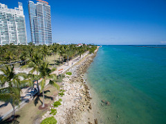
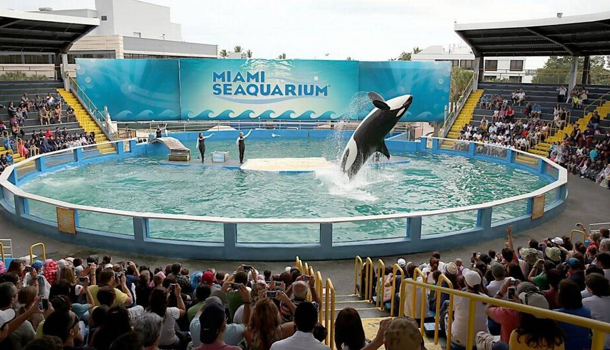
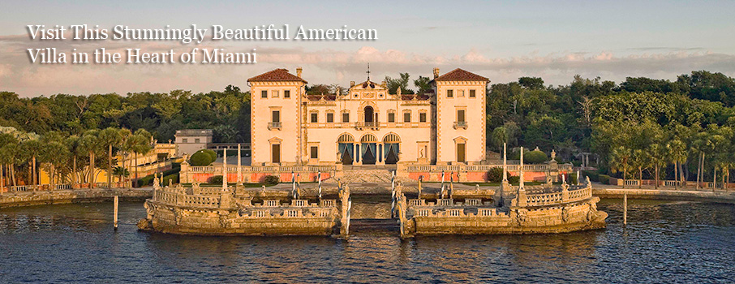
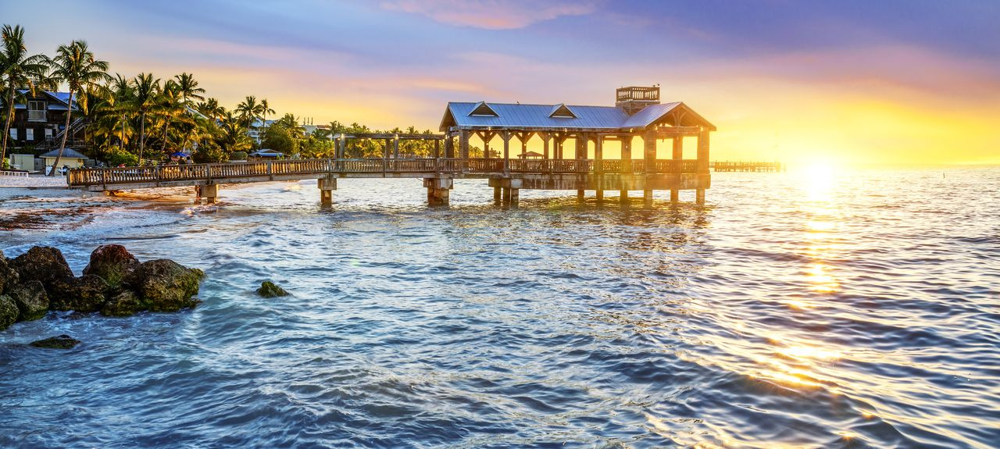
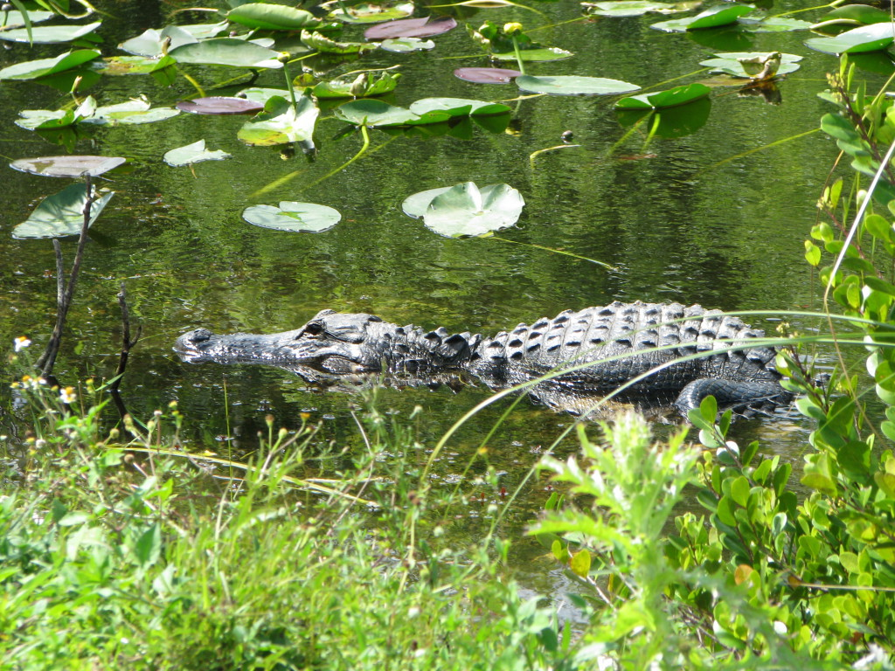
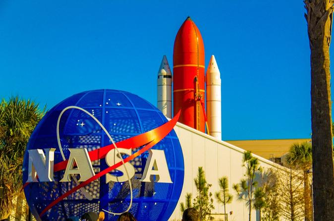

Miami and Florida Attractions:
Miami is the cultural, economic and financial center of South Florida and the world's most popular vacation spots.
https://www.miamiandbeaches.com/
https://www.visitflorida.com/en-us/cities/miami.html
1. South Beach:
South Beach is known for its beaches and the glamorous scene around its happening nightspots and celebrity-chef eateries. Chain stores and indie fashion shops line pedestrian shopping strip Lincoln Road Mall. On Ocean Drive, known for its well-preserved art deco architecture, outdoor cafes offer a ringside view of the scene. Museums include the Wilsonian-FIU, which has a collection of modern art and objects.

2. Miami Seaquarium:
The Miami Seaquarium is a 38-acre oceanarium located on the island of Virginia Key in Biscayne Bay, Miami-Dade County, Florida, United States and is located near downtown Miami. Miami's Best Aquarium Discover South Florida's best aquarium and favorite visitor attraction. Enjoy amazing marine mammal shows with dolphins and sea lions that delight children of all ages. See world-class sea life exhibits with manatees, sea turtles, penguins, rays and more. website

3. Vizcaya Museum and Gardens:
Vizcaya was created as James Deering's subtropical winter home in the 1910s and today it is a National Historic Landmark and accredited museum. We invite you to learn about Vizcaya's fascinating history and the individuals responsible for the unusual estate's origins, evolution and ongoing management. website

4. Key West:
Key West, a U.S. island city, is part of the Florida Keys archipelago. It's also Florida's southernmost point, lying roughly 90 miles north of Cuba. Famed for its pastel-hued, conch-style houses, it's a cruise-ship stop also accessible from the mainland via the Overseas Highway. It's known more for its coral reefs - destinations for diving and snorkeling - than for its beaches.
website

5. Everglades National Park:
Everglades National Park is a 1.5-million-acre wetlands preserve on the southern tip of the U.S. state of Florida. Often compared to a grassy, slow-moving river, the Everglades is made up of coastal mangroves, sawgrass marshes and pine flatwoods that are home to hundreds of animal species. Among the Everglades' abundant wildlife are the endangered leatherback turtle, Florida panther and West Indian manatee.
website

6. Kennedy space center:
The John F. Kennedy Space Center (KSC, originally known as the NASA Launch Operations Center) is one of ten National Aeronautics and Space Administration field centers. Since December 1968, Kennedy Space Center has been NASA's primary launch center of human spaceflight.
website

7. Miami offers wide range of museums:
https://www.miamiandbeaches.com/things-to-do/arts-culture/top-miami-museums-to-visit-on-vacation